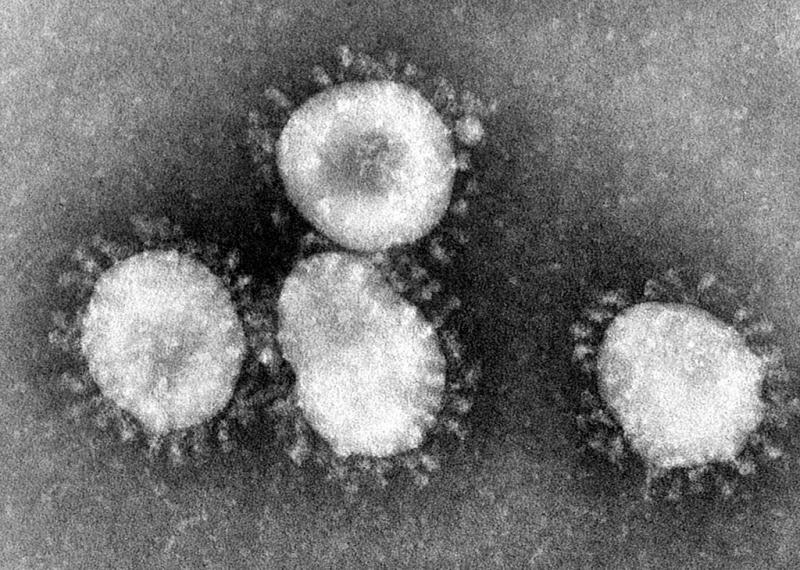

Epidemia del COVID-19: Introducción
¿Qué son los coronavirus?

¿Qué es el COVID-19?
- Gripe.
- Tos seca.
- Disnea (dificultad para respirar).
- Mialgia (dolores musculares).
- Fatiga.
- Y este es otro diferente.
Datos de la OMS indican que aproximadamente el 3.75% de los infectados terminan en defunciones. [1]
¿Cómo se transmite el virus del COVID-19?
¿Cómo evitar el contagio?
El contagio puede prevenirse con un continuo lavado de manos, especialmente con agua y jabón, o en su defecto, alcohol en gel, utilizando cubrebocas o caretas. Aunque nada reemplaza el distanciamiento social: no salir de la casa a menos que sea totalmente necesario y evitar a conglomeraciones. [2]
Desarrollo de la pandemia
A nivel mundial
En México
Task: Primera parte
¡Vamos!Resumen
Comunicar acerca de la crisis COVID-19 en México a través de un artículo interactivo que muestre mapas interactivos, utilizando información geoespacial, k-medias y Análisis de Componentes Principales, con la herramienta del lenguaje de programación Python.
Objetivos
- Método de Clustering con K-means.
- Método de Análisis de Componentes principales (PCA).
- Ejercicio práctico usando Python.
- Hacer un mapa interactivo.
- Sombrear áreas en el mapa.
Procedimiento
- Calcular el algoritmo de agrupación para diferentes valores de K.
- Para cada K, calcular la suma total del cuadrado dentro del clúster.
- Trazar la curva de la suma de errores cuadráticos de acuerdo con el número de grupos K.

Task: Segunda parte
¡Vamos!Resumen
Comunicar acerca de la crisis COVID-19 en México a través de un artículo que muestre, mediante gráficas, las curvas epidémicas. Además, realizar los cálculos necesarios con los datos oficiales , con ayuda de artículos relacionados, para determinar la tasa de ataque del SARS-CoV-2.
Objetivos
- Definir el agente causal.
- Establecer la definición de caso.
- Nombrar factores de riesgo.
- Graficar curva epidémica.
Procedimiento
Definir el agente causal.
Definición de casos:
- Caso sospechoso: Persona que cumple los siguientes criterios clínicos y epidemiológicos.
- Criterios epidemiológicos: que el paciente tenga un cuadro agudo de tos o fiebre aguda o que tenga 3 o más de los síntomas más recurrentes.
- Criterios epidemiológicos: haber residido, viajado o trabajado en algún área de alto riesgo de transmisión del SARS-CoV-2, dentro de los 14 días antes del inicio de los síntomas.
- Caso probable:
- Paciente que ha estado en contacto con un caso confirmado.
- Paciente sospechoso que, además, se ha realizado estudios médicos y los resultados arrojan hallazgos de COVID-19, como: opacidades nebulosas, múltiples opacidades bilaterales en vidrio esmerilado o líneas pleurales engrosadas.
- Persona que presenta anosmia (pérdida del olfato) sin razón aparente.
- Caso positivo: paciente que se ha realizado la prueba de COVID-19 y su resultado ha sido positivo.
Factores de riesgo:
- Edad avanzada (edad arriba de los 50 años).
- Obesidad
- Diabetes
- Hipertensión
- Tabaquismo
Curvas epidémicas:
Referencias
[1] Preguntas y respuestas sobre la enfermedad por coronavirus (COVID-19). (2020). Retrieved 13 August 2020, from https://www.who.int/es/emergencies/diseases/novel-coronavirus-2019/advice-for-public/q-a-coronaviruses
[2] Quédate en casa – Coronavirus. (2020). Retrieved 14 August 2020, from https://coronavirus.gob.mx/quedate-en-casa/
[3] Brote de enfermedad por el Coronavirus (COVID-19) - OPS/OMS | Organización Panamericana de la Salud. (2020). Retrieved 14 August 2020, from https://www.paho.org/es/temas/coronavirus/brote-enfermedad-por-coronavirus-covid-19
[4] COVID-19 Tablero México. (2020). Retrieved 14 August 2020, from https://coronavirus.gob.mx/datos/#DOView
[5] Kaufman, L., & Rousseeuw, P. (1990). Finding groups in data. New York: Wiley.
[6] González, L. (2020). SELECCIONAR EL NÚMERO DE CLÚSTERES | #4 Curso Aprendizaje no Supervisado con Python [Video]. Retrieved from https://www.youtube.com/watch?v=jcQlODahgRw&t=225s
[7] M. López, C. (2020). Coronavirus: Identifican los fa Mctores de riesgos asociados a la enfermedad - Gaceta Médica. Retrieved 14 August 2020, from https://gacetamedica.com/investigacion/coronavirus-identifican-los-factores-de-riesgos-asociados/